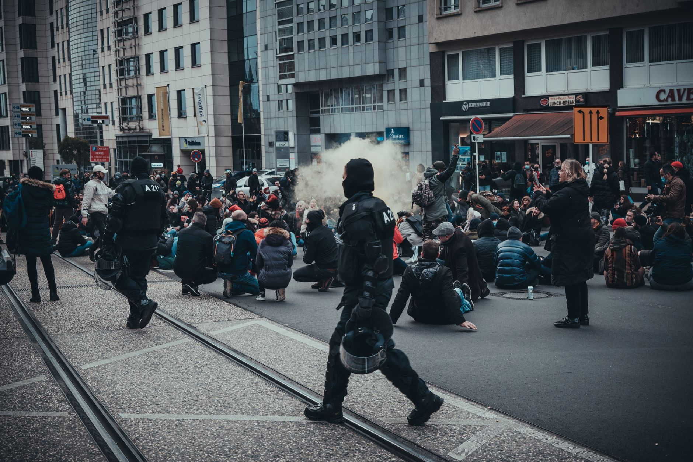

Escalation of civil unrest in Germany
What began as organized demonstrations regarding the rising cost of living in Germany has rapidly escalated into a series of violent confrontations. Across several major metropolitan areas, the atmosphere has shifted from peaceful assembly to chaotic scenes of destruction. Citizens expressing frustration over inflation, energy costs, and housing shortages have increasingly turned toward more radical forms of protest.
The escalation has caught many local authorities off guard. While small-scale demonstrations are a common feature of German political life, the intensity of the recent outbursts suggests a deeper level of societal dissatisfaction. Security forces have been deployed in large numbers to maintain order, but the sheer scale of the movements has made containment difficult in dense urban environments.
Looting and property damage reported
The most visible sign of the unrest has been the widespread looting of retail establishments. In several districts, storefronts were smashed and goods were taken by large crowds. This destruction has not only caused significant financial loss for local business owners but has also created a sense of insecurity among residents living in the affected areas.
Emergency services have struggled to respond to the simultaneous calls for help. As fires broke out in some trash bins and storefronts, the police were forced to prioritize protecting critical infrastructure and preventing further loss of life, often leaving property protection as a secondary concern.
Economic drivers behind the anger
To understand why these protests have turned so volatile, one must look at the underlying economic pressures facing the German population. The country, traditionally seen as an economic powerhouse in Europe, is grappling with significant inflationary pressures that have eroded the purchasing power of the middle and working classes.
The struggle to afford basic necessities like heating and groceries has moved from a private concern to a public outcry that can no longer be ignored by the political establishment.
High energy prices, driven by geopolitical shifts and supply chain disruptions, have played a central role in this discontent. When combined with rising rents in urban centers, many citizens feel they are being squeezed out of their own cities. This economic anxiety provides the fuel that extremist elements use to mobilize larger, more aggressive crowds.
Government and police response
The German government has faced intense criticism from both sides of the political spectrum. Some argue that the state has failed to provide a sufficient safety net, while others condemn the violence as an unacceptable assault on democratic norms and the rule of law. Officials are currently debating whether to increase social spending or focus on stricter policing to curb the unrest.
Law enforcement agencies have responded with a heavy presence, utilizing water cannons and increased patrols to deter rioters. However, the use of force has itself become a point of contention, with some protest organizers claiming that the police response is disproportionate and further radicalizes the movement.
Broader implications for Europe
The unrest in Germany is not happening in a vacuum. Similar economic pressures are being felt across the European Union, leading to a rise in populism and social instability in various member states. The situation in Germany serves as a bellwether for how European nations will handle the intersection of economic hardship and political volatility.
If the cost of living does not stabilize, experts warn that these outbursts could become a recurring feature of European political life. The stability of the Eurozone and the internal cohesion of the EU depend heavily on the economic well-being of its largest economies, making the German situation a matter of international concern.
As we observe these shifts in social justice and economic stability, it is important to look at how other global issues intersect with modern activism. For more perspectives on social justice and historical accountability, you may find our coverage of the Burnham stance on slavery apology and reparations news helpful for understanding the broader landscape of modern protest movements.
See Also
If you enjoyed this Current Events article, check out Burnham stance on slavery apology and reparations news for more useful reading.